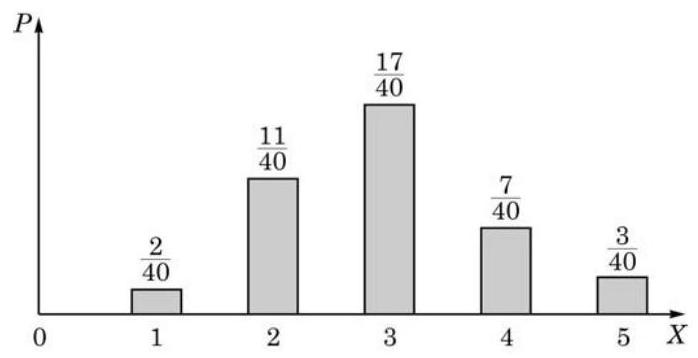

1 随机变量与分布
在许多情况下, 我们可以使用数来表示随机现象的结果. 生活中就有很多例子:
(1)掷一颗骰子，用 表示点数， 表示掷出 6 点， 表示掷出 1 点；
(2)抛掷一枚硬币 10 次，用 表示得到正面的次数，例如, 表示 5 次是正面;
(3)从一个放有大小与质地相同的 10 个白球、 10 个黑球的罐子中摸出 5 个球,用 表示其中白球的个数;
(4)用 表示明天的降雨量(单位:mm)；
(5)用 表示保险公司某客户一年中的车辆损失(单位:元).
在这些例子中, 我们都是用数来表示随机现象的结果, 这引出随机变量这个重要的概念.
尽管随机变量的名字中用了“变量”这两个字，但实际上它是一个函数. 随机变量的取值在随机现象发生前是随机的, 且其取某一具体值这一事件的概率是该随机变量在该值上的分布. 分布是日常生活中经常使用的一个词, 如收入分布、人口分布、年龄分布、成绩分布等. 在数学中, 分布的定义如下:
注意,在上述定义中,随机变量 的所有可能取值 (以 作为观察角度的所有结果) 的概率的和等于 1 .
分布的表示方法很多, 常用图表来表示, 这比较直观易懂. 例如, 下面例 1 中的分布, 第一行表示随机变量的取值, 第二行表示相应取值的概率.
例题 1
例 1 分别抛掷 1、2、3 枚硬币，计算其中正面朝上枚数 的分布.
答案与解析收起 / 展开
解(1)先考虑抛掷 1 枚硬币的情形. 此时 的可能取值是 0、1，且 ，所以 的分布是
(2)再考虑抛掷 2 枚硬币的情形. 此时 的可能取值是 0 、 1、2，分别表示两个反面、一正一反、两个正面这三个事件，因为 ,所以 的分布是
让我们用这个例子来详细解释一下随机变量. 用 及 分别表示正反面, 那么样本空间
是等可能的. 随机变量 是正面朝上的个数,故
且
分别包含 1、2 及 1 个元素，因此概率分别是 、 、 .
(3)若抛掷 3 枚硬币，则 的可能取值是 0、1、2、3，分别表示三个反面、一正两反、两正一反、三个正面这四个事件, 而
所以 的分布是
例题 2
例 2 掷一颗骰子，观察掷得的点数.
(1)求点数 的分布；
(2)只关心点数 6 是否出现. 若出现,则记 ,否则记 . 求 的分布.
答案与解析收起 / 展开
解(1)因为掷得每个点数为等可能事件，所以点数 的分布为
( 2 )因为 ，而 ，所以 的分布为
一般要求概率值是正数, 因为 0 概率值在分布中所处的这一列总可以删去.
当随机变量取所有值的概率均相等时, 称它是等可能分布或均匀分布的, 如例 1 (1) 与例 2 (1). 另外, 只取两个值的随机变量称为伯努利型, 其分布称为伯努利分布, 如例 1(1) 与例 2(2).
一个如下形式的图表被称为一个分布:
Q
分布直观上表示总值为 1 的量是怎么分布在一些数上的.
其中 是互异的实数, 是非负数, 作为概率值, 其总和为 1 , 即成立
例题 3
例 3 统计某地历史上近两百年的年降水量，得到以下数据:
| 年降水量/mm | 0~100 | 100~200 | 200~300 | 300~400 | 400 以上 |
| 年数 | 10 | 55 | 85 | 35 | 15 |
请据此构造一个随机变量并求其分布.
答案与解析收起 / 展开
解 用 表示年降水量级别, 分别表示年降水量为 0~100、100~200、200~300、300~400 和 400 以上. 是一个随机变量,其分布为
分布通常可用更直观的图像来表示, 如下面的条形图 (图 7-2-1)所示.

图 7-2-1
练习 7.2(1)
练习7.2(1) · 1
- 掷两颗骰子，用 表示两点数差的绝对值. 求 的分布.
答案与解析收起 / 展开
练习7.2(1) · 2
- 以下是分布的为 ( )
A. ; B. ;
C. ; D. .
答案与解析收起 / 展开
2 期望
定义 如果随机变量 的分布是
数学期望是一个加权平均, 其中的权是随机变量取值对应的概率.
例题 4
例 4 (1)掷一颗骰子，求掷得点数的期望；
(2)掷两颗骰子，求掷得点数和的期望.
答案与解析收起 / 展开
解(1)掷一颗骰子，掷得点数 的期望是
(2)掷两颗骰子，掷得点数和 的分布为
其期望为
例题 5
例 5 抛掷 枚硬币,用 表示正面朝上的硬币数. 求它的分布及期望.
答案与解析收起 / 展开
解 抛掷 枚硬币是一个古典概率模型,其基本事件是
其中,括号里的每一个 * 表示每一枚硬币抛掷的结果: 正面朝上 或者反面朝上 . 所以,抛掷 枚硬币的随机试验的样本空间中有 个元素. 事件 表示 “出现 个正面朝上”,即其中有 个 、 个 的基本事件全体. 用选择性必修课程第 6 章介绍的排列组合方法, 这个事件含有的基本事件数为在 个位置上取 个位置放置 的组合数 .
的取值范围是 ,有
有了 的分布,就可以得到 的期望,为
当 时,有
由选择性必修课程 6.5 节中所介绍的二项式定理, 得所求的期望为
掷一颗骰子，掷得点数的期望是 3.5 ，甚至不是一个整数， 那么，期望到底有什么意义呢？实际上，期望的意义在多次重复试验中可以明显地体现出来. 例如,重复掷一颗骰子 次,所得到的点数分别记为 ,那么,当 很大时,平均点数必定逼近于期望, 即成立
这个结果类似于在必修课程 12.3 节中所述的伯努利大数定律.
随机变量的期望是一个确定的数, 它满足下面两个性质.
请同学们尝试完成性质 1 的证明.
期望的线性性质
- 如果 是一个随机变量, 是一个实数,那么
- 如果 是两个随机变量,那么
例 4(2)中求得点数之和的期望是 7 ，这是通过分布来计算的. 更方便的方法是利用期望的性质来计算. 用 、 分别表示掷第一颗及第二颗骰子得到的点数,那么 就是两颗骰子的点数之和. 这样, 根据期望的线性性质, 并利用例 4(1) 的结果, 就得到
练习 7.2(2)
练习7.2(2) · 1
- 抛掷 4 枚硬币,用 表示正面朝上的枚数. 求 的期望.
答案与解析收起 / 展开
练习7.2(2) · 2
- 从一个放有大小与质地相同的 5 个白球、4 个黑球的罐子中不放回地摸 3 个球, 用 表示摸到的白球数. 求 的期望.
通过前面的学习，我们不仅能够时刻感知无处不在的随机性， 还能够感知随机性的大小. 一般来说, 如果某件事发生的可能性很大或者很小, 它的随机性就相对较小. 例如, 抛掷一枚硬币, 正面和反面朝上的概率都是 ,而掷一颗骰子得到 “ 6 ”与 “非 6 ”两个结果的概率则是 与 . 相比之下,抛掷硬币的结果更不确定,所以随机性更大. 与之比较, 买彩票中奖的概率要小很多, 因此随机性更小. 人们经常把随机性很小 (概率接近 0 或 1 ) 的事件近似为确定的事件，即近似确定不发生或近似确定发生，此时，就模糊了确定性和随机性的界限，把“确定”当作是随机性非常小的代名词.
期望大体上表示一个随机变量的“中间”态. 随机变量的取值虽不确定, 但总是分布在期望的两侧, 可能远也可能近. 通俗地说, 如果一个随机变量分布在期望两侧比较远的地方, 就说这个随机变量比较分散. 反过来, 如果一个随机变量分布在期望两侧比较近的地方, 就说这个随机变量比较集中.
数学上用什么指标来衡量随机变量的分散度呢? 按照上面的分析,对随机变量 而言,我们用 与其期望的偏差的平方的期望, 即
来衡量随机变量 的分散度,称为 的方差 (variance),记为 .
Q
定义 随机变量 的方差 定义为
考虑一个极端的情况. 如果 是一个常数随机变量,那么就有 . 这说明一个确定的量的分散度为零. 反之,如果 ,那么 就是一个常数随机变量. 这说明分散度为零的量必是一个确定的量.
下面推导一个更方便使用的方差公式. 事实上, 根据期望的线性性质,并注意到 是一个常数,就有
事件可以看成是一个随机变量:发生定义为 1 , 不发生定义为 0 . 这样, 随机性大小与分散度大小实际上是统一的.
方差是 平方之后的期望, 它与期望 的尺度不同. 统计中经常使用标准差 来代替方差.
这样，就得到方差的如下计算公式:
答案与解析收起 / 展开
例题 6
例 6 掷一颗骰子,用 表示掷得的点数. 求 的方差.
答案与解析收起 / 展开
解 由本节例 4 可知 的期望 ,现在需要计算 ,为此先计算 的分布. 显然, 的取值是 、 ,且
于是
因此
例 6 中 的计算实际上无需求助于 的分布,只要知道 自身的分布就够了. 事实上,若 的取值为 , ,而相应的概率为 ,就有
方差有以下两个性质:
方差的性质
- 如果 是一个随机变量, 是一个实数,那么
- 如果 分别是两个独立的随机试验所对应的随机变量, 那么
性质 1 的证明是容易的, 但性质 2 的证明超出所学的知识范围. 这两个性质的证明这里均略去, 只列出它们的结论.
例题 7
例 7 掷两颗骰子,掷得的点数分别为 . 求点数和 与点数差 的期望与方差.
答案与解析收起 / 展开
解 本节例 4 说明 ,本节例 6 说明
请同学们尝试完成性质 1 的证明.
由期望的线性性质, 可得
因为掷两颗骰子是两个独立的随机试验,而 分别是这两个独立试验所对应的随机变量, 所以由方差的性质可得
综上所述, 一个随机变量是以其样本空间为定义域的函数, 期望描述它的中心位置, 而方差描述此随机变量对其期望的偏离度, 即其随机程度. 期望与方差是随机变量最重要的两个特征. 它们是通过数字来描述的, 也称为数字特征.
练习 7.2(3)
练习7.2(3) · 1
- 设 是一个随机变量, 是常数. 求证: 的方差与 的方差相等.
答案与解析收起 / 展开
练习7.2(3) · 2
答案与解析收起 / 展开
习题 7.2
A 组
习题7.2A · 1
- 一袋中装有 6 个大小与质地相同的白球,编号为 1、2、3、4、5、6. 从该袋内随机取出 3 个球,记被取出球的最大号码数为 . 写出随机变量 的分布.
答案与解析收起 / 展开
习题7.2A · 2
- 掷两颗骰子，用 表示较大的点数 (在点数相同时， 表示共同的点数). 求 的分布与期望.
答案与解析收起 / 展开
习题7.2A · 3
- 设某射手打靶环数 的分布为
已知期望 . 求 的值.
答案与解析收起 / 展开
习题7.2A · 4
- 一袋中装有大小与质地相同的 2 个白球和 3 个黑球.
(1)从中有放回地依次摸出 2 个球，求 2 球颜色不同的概率；
(2)从中不放回地依次摸出 2 个球，记 2 球中白球的个数为 . 求 的期望和方差.
答案与解析收起 / 展开
B 组
习题7.2B · 1
- 编号为 1、2、3、4 的四名学生随机入座编号为 1、2、3、4 的座位，每个座位坐一人. 座位编号和学生编号一样时称为一个配对. 用 表示配对数,求 .
答案与解析收起 / 展开
习题7.2B · 2
- 已知一个随机变量 的分布为
若 ,且 ,求 的值.
答案与解析收起 / 展开
习题7.2B · 3
- 一袋中装有编号为 1、2、3、4、5 的五个大小与质地相同的球. 依次摸两个球, 用 分别表示第一个及第二个球的编号. 在以下两种情况下分别求 以及两编号之和 的分布,再分别验证等式 与 是否成立.
(1)放回;
(2)不放回.
答案与解析收起 / 展开
- (1) 的分布为 的分布为 ,
的分布为 ,
(2) 的分布为 的分布为 ,
的分布为 ,
习题7.2B · 4
- 先掷一颗骰子,记朝上的点数为 . 再抛掷 枚硬币,记 为正面朝上的硬币数. 求 的分布、期望与方差.
答案与解析收起 / 展开
- 记 ,对 ,利用全概率公式,得
计算可得 的分布为 ,
由此通过计算,可得 .
课后阅读
随机商品的定价与风险
商品是大家熟悉的东西，生活离不开商品. 除了通常的商品外，还有随机商品. 所谓随机商品, 就是其价值在购买的时候不确定, 在未来的某个时刻才会确定的商品, 如彩票、股票、保险等. 不确定性意味着风险(risk). 因为人们对于风险的需求或者偏好不同, 所以随机商品可以用来实现风险的转移. 有的人喜欢风险, 喜欢碰运气, 他就会买彩票, 也就是用不多的钱购买一个中大奖的微小机会; 相反, 有的人不喜欢风险, 他就会买保险, 保险源于人们对于未知风险的恐惧, 把自己未来不确定的损失换成确定的付出, 或者说付费让保险公司来分担风险. 一个基本的常识是，潜在收益越大，风险就越大，风险和收益是成正比的.
心理期望与数学期望
从中文字义看, 期望是内心的期待, 是涉及人的心理的, 可以说是心理期望, 概率中所说的期望是数学期望, 这个概念在费马和帕斯卡讨论分奖金问题时就产生了. 心理期望和数学期望两者有什么关系呢? 拿一个随机商品来说, 它的期望值是不是与人们的心理期望重合呢？在多数情况下的确如此，因为期望是随机商品在大样本条件下的平均价值. 但是在一些极端情况下, 两者明显是背离的.
考虑如下的游戏:请你抛掷 20 枚硬币，如果 20 枚都是正面朝上，那么你将得到 10 亿元，否则得 0 元. 这是一个随机产品，它的价值记为 ， 以大约一百万分之一的概率取值为 10 亿,剩余的概率取值为 0,因此数学期望 约等于 1000 . 问题是你愿意花多少钱玩这个游戏, 也就是问它的心理期望是多少. 我想在大多数人的心目中，它的价值是远远小于 1000 元的. 如果这还不能说服你, 那我们来看经典的圣彼得堡悖论. 考虑这样一个游戏: 不断地抛掷一枚硬币直到出现正面朝上为止,如果正面朝上出现在第 次,那么你得到 元. 记这个游戏的价值是 . 因为第 次首次出现正面朝上这个事件发生的概率是 ,得到的钱数是 ,所以由 Q 期望公式可以看出 的数学期望是无穷大. 按照数学期望来看,无论你花多少钱玩这个游戏都是值得的. 但根据调查, 很少有人愿意花 25 元去参加一次这样的游戏. 现在你可以抛掷一枚硬币试一下，然后考虑一下，你愿意花多少钱玩这个游戏呢？或者说它在你的心里价值几何?
圣彼得堡悖论是尼古拉・伯努利(N. Bernoulli, 他是证明大数定律的雅各布。 伯努利的侄子) 于 1738 年提出的.